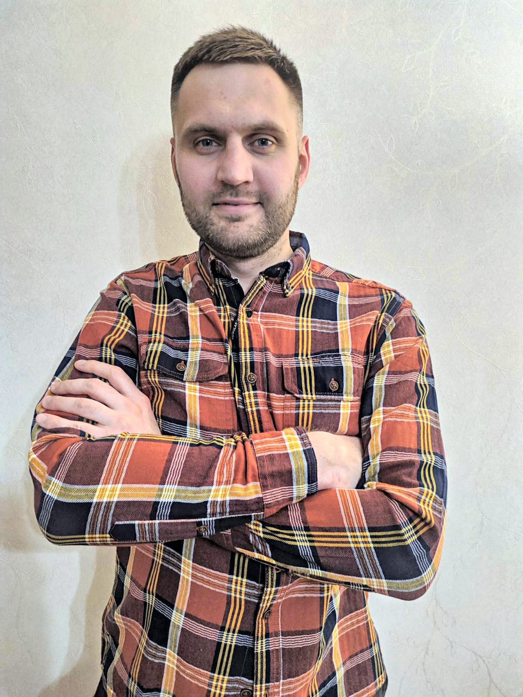

CONTACS:
tel: +375333828012
email: gerasimenkodenis7@gmail.com
ABOUT ME:
I have such qualities as hard work, perseverance, perseverance,
sociability, responsibility, stress resistance. I have no bad habits, I
go in for sports. Easy to train, there is a great desire to work in the
IT field.
SKILLS:
- JavaScript
- TypeScript
- React
- Redux
- Material-UI
- Formik
- HTML5
- CSS3
- Jest
- Storybook
- RestAPI
WORK EXPIRIENCE:
COURSES:
- Basics Computer Science
- Frontend Developer
- Java Programming
PROJECTS:
- Social Network: TypeScript, React, Redux, Ant Design
- Todo List: TypeScript, React, Redux, Material-UI
- Cards: TypeScript, React, Redux, Ant Design
EDUCATION:
Minsk Teological Seminary: The Bachelor of Theology degree
ENGLISH: B1